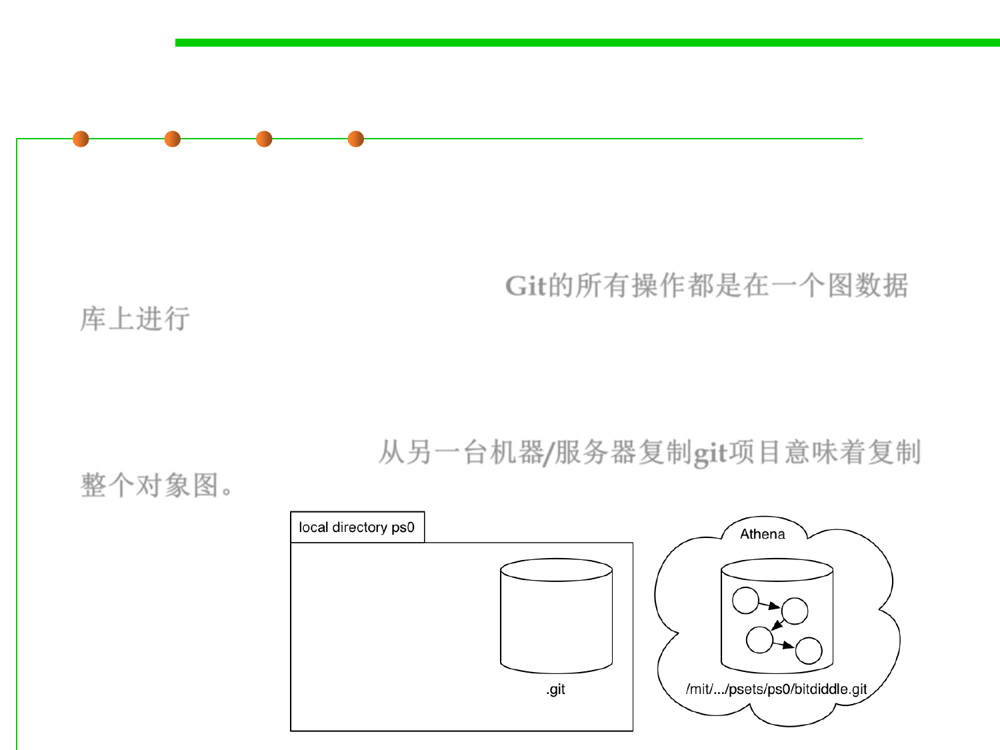

Object graph in Git
2.1 Software Lifecycle and Configuration Management
▪ All of the operations we do with Git — clone, add, commit, push,
log, merge, … — are operations on a graph data structure that
stores all of the versions of files in the project, and all the log
entries describing those changes. Git的所有操作都是在一个图数据
库上进行
▪ The Git object graph is stored in the .git directory of the repository.
▪ Copying a git project from another machine/server means copying
the whole object graph.从另一台机器/服务器复制git项目意味着复制
整个对象图。
– git clone